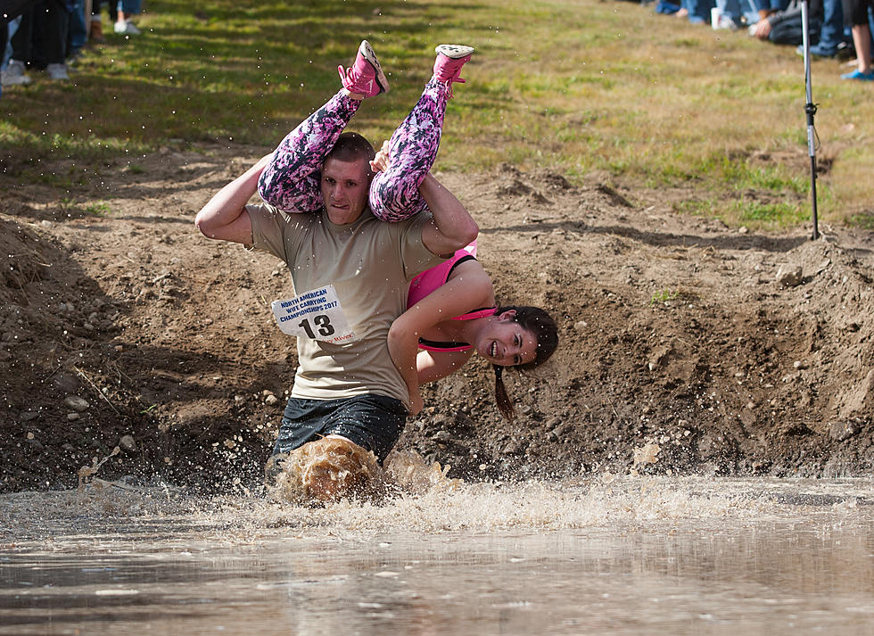

This is the first time for me learning HTML and CSS and this website is very helpful for my study
Things I need for me to complete my HTML exercise and learn the basics of HTML and CSS are:
Beside the introductions, this going to be my first webpage and the title is going to be:
Wife carrying is a contest in which male competitors race while each carrying a female partner. The objective is for the male to carry the female through a special obstacle track in the fastest time. The sport was first introduced at Sonkajärvi, Finland.Several types of carrying may be practised: either a classic piggyback, a fireman's carry (over the shoulder), or Estonian-style (wife upside-down on his back with her legs over the neck and shoulders).

(Source:Getty images. SbS News)
The original course was a rough, rocky terrain with fences and brooks, but it has been altered to suit modern conditions. There is now sand instead of full rocks, fences, and some kind of area filled with water (a pool). These are the following rules set by the International Wife Carrying Competition Rules Committee
(Source- Sunday river resort, wokq.com)
you can acces further more from
Wife carrying competition